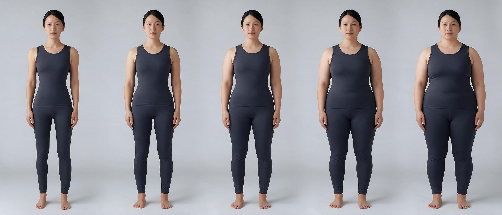
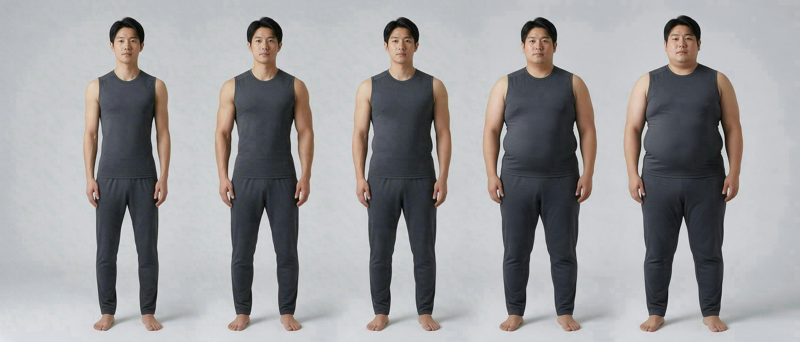

BODY ATLAS · PROPORTION BEFORE LABELS
读懂身形，
从比例关系开始。
身形不是一个水果名称，也不是审美等级。这里把整体印象拆回肩、腰、髋、躯干和四肢的可观察关系，让每个标签都有明确边界。
48身形标签
6观察区域
48比例图例
H
A
V
X
先测量，后命名先找肩峰、自然腰线、髋部最宽点与关节点。
比例，不是数值标签描述同一个体内部及相邻区域的相对关系。
允许组合整体轮廓、腰线位置和四肢比例可以同时成立。
VISUAL VOLUME REFERENCE
体型量感五级对照
在统一正面机位下观察身体轮廓从纤细到饱满的连续变化。性别分栏用于呈现常见脂肪分布差异，不代表性别身份。

- 01纤细型整体软组织量感较低
- 02偏纤细型轮廓轻盈，曲线较缓
- 03中等量感各区域量感相对均衡
- 04偏饱满型腰腹与四肢轮廓趋柔和
- 05饱满型整体软组织量感较高

- 01纤细型整体软组织量感较低
- 02偏纤细型轮廓轻盈，腰腹量感较低
- 03中等量感各区域量感相对均衡
- 04偏饱满型腰腹与躯干轮廓趋柔和
- 05饱满型整体软组织量感较高
视觉量感 ≠ 体脂率照片无法替代 DXA、BIA 或专业测量。
量感 ≠ 体重骨架、肌肉和脂肪分布都会改变轮廓。
描述 ≠ 评价五级没有优劣顺序，也不用于健康判断。
INTERACTIVE BODY ATLAS
身形标签资料库
所有标签都以自然站立、统一机位和相对比例为前提，不推断体重、健康、性格或性别。
观察区域
标签性质
没有找到对应标签
换一个名称、英文名或观察维度再试试。
Esc 清除搜索词
PROPORTION CHECK
名称相近，测量区间不同
身形判断最常见的错误，是把相邻但不同的观察区间当作同一个标签。
OBSERVATION PROTOCOL
可靠观察的三个前提
姿势、镜头和服装会快速改变身形印象。资料库只在观察条件可控时讨论比例。
- 01自然站立
双脚均匀承重，手臂自然垂落，不刻意挺胸、收腹或沉肩。
- 02统一机位
相机保持水平，机位接近腰部高度，避免广角近拍造成四肢变形。
- 03多角度核对
正面判断宽度与线条，侧面判断纵深，后面确认肩髋和左右状态。